Cross-Validation for Quantile Lasso
Ryan Tibshirani
June 7, 2020
cv_example.Rmd\[ \newcommand{\argmin}{\mathop{\mathrm{argmin}}} \newcommand{\argmax}{\mathop{\mathrm{argmax}}} \newcommand{\minimize}{\mathop{\mathrm{minimize}}} \newcommand{\st}{\mathop{\mathrm{subject\,\,to}}} \]
Problem setup
Consider the problem \[ \minimize_{\beta_0,\beta} \; \sum_{i=1}^n \psi_\tau(y_i - \beta_0 - x_i^T \beta) + \lambda \|\beta\|_1 \] where \[ \psi_\tau(v) = \max\{\tau v, (\tau-1) v)\}, \] often called the “pinball” or “tilted \(\ell_1\)” loss, for a quantile level \(\tau \in (0,1)\). With multiple quantile levels \(\tau_k\), \(k=1,\ldots,r\), we can simply solve the quantile lasso problem separately for each \(\tau_k\).
Cross-validation
Suppose we have multiple quantile levels \(\tau_k\), \(k=1,\ldots,r\) of interest, and we allow one tuning parameter per quantile level \(\lambda_k\), \(k=1,\ldots,r\). We seek to minimize the cross-validation (CV) error over the choices of tuning parameters, \[ \sum_{k=1}^r \sum_{i=1}^n \psi_\tau\Big(y_i - \hat\beta_0(D_{-i}; \tau_k, \lambda_k) - x_i^T \hat\beta(D_{-i}; \tau_k, \lambda_k)\Big), \] where \(\hat\beta_0(D; \tau, \lambda)\), \(\hat\beta(D; \tau, \lambda)\) denotes the quantile lasso solution fit on a data set \(D\), at quantile level \(\tau\), and tuning parameter value \(\lambda\). Above, for each \(i=1,\ldots,n\), we use \(D_{-i}\) to denote the CV training fold used for point \(i\). We can do this just by separately optimizing, for each \(k=1,\ldots,r\), the CV error \[ \sum_{i=1}^n \psi_\tau\Big(y_i - \hat\beta_0(D_{-i}; \tau_k, \lambda_k) - x_i^T \hat\beta(D_{-i}; \tau_k, \lambda_k)\Big), \] over \(\lambda_k\). That is, this flexibility—allowing each quantile level its own tuning parameter value—is both statistically and computationlly favorable.
Gaussian example
We show a simple example of CV with Gaussian regression data. We also show how to extrapolate to a new set of quantiles, and how to refit at a new set of quantiles.
library(quantgen)
set.seed(33)
n = 500
p = 50
x = matrix(rnorm(n*p), n, p)
mu = function(x) x[1] + x[2]
y = apply(x, 1, mu) + rnorm(n)
# Run CV, over just a few quantile levels
tau = c(0.1, 0.3, 0.5, 0.7, 0.9)
cv_obj = cv_quantile_lasso(x, y, tau=tau, nlambda=30, nfolds=5, lp_solver="gurobi", verbose=TRUE, sort=TRUE)## Warning in get_lambda_max(x, y, d, weights, lp_solver): gurobi R package not
## installed, using Rglpk instead.## CV fold 1 ...## Warning in quantile_genlasso_lp(x = x, y = y, d = d, tau = tau, lambda =
## lambda, : gurobi R package not installed, using Rglpk instead.## Problems solved (of 150): 5 ... 10 ... 15 ... 20 ... 25 ... 30 ... 35 ... 40 ... 45 ... 50 ... 55 ... 60 ... 65 ... 70 ... 75 ... 80 ... 85 ... 90 ... 95 ... 100 ... 105 ... 110 ... 115 ... 120 ... 125 ... 130 ... 135 ... 140 ... 145 ... 150 ...
## CV fold 2 ...## Warning in quantile_genlasso_lp(x = x, y = y, d = d, tau = tau, lambda =
## lambda, : gurobi R package not installed, using Rglpk instead.## Problems solved (of 150): 5 ... 10 ... 15 ... 20 ... 25 ... 30 ... 35 ... 40 ... 45 ... 50 ... 55 ... 60 ... 65 ... 70 ... 75 ... 80 ... 85 ... 90 ... 95 ... 100 ... 105 ... 110 ... 115 ... 120 ... 125 ... 130 ... 135 ... 140 ... 145 ... 150 ...
## CV fold 3 ...## Warning in quantile_genlasso_lp(x = x, y = y, d = d, tau = tau, lambda =
## lambda, : gurobi R package not installed, using Rglpk instead.## Problems solved (of 150): 5 ... 10 ... 15 ... 20 ... 25 ... 30 ... 35 ... 40 ... 45 ... 50 ... 55 ... 60 ... 65 ... 70 ... 75 ... 80 ... 85 ... 90 ... 95 ... 100 ... 105 ... 110 ... 115 ... 120 ... 125 ... 130 ... 135 ... 140 ... 145 ... 150 ...
## CV fold 4 ...## Warning in quantile_genlasso_lp(x = x, y = y, d = d, tau = tau, lambda =
## lambda, : gurobi R package not installed, using Rglpk instead.## Problems solved (of 150): 5 ... 10 ... 15 ... 20 ... 25 ... 30 ... 35 ... 40 ... 45 ... 50 ... 55 ... 60 ... 65 ... 70 ... 75 ... 80 ... 85 ... 90 ... 95 ... 100 ... 105 ... 110 ... 115 ... 120 ... 125 ... 130 ... 135 ... 140 ... 145 ... 150 ...
## CV fold 5 ...## Warning in quantile_genlasso_lp(x = x, y = y, d = d, tau = tau, lambda =
## lambda, : gurobi R package not installed, using Rglpk instead.## Problems solved (of 150): 5 ... 10 ... 15 ... 20 ... 25 ... 30 ... 35 ... 40 ... 45 ... 50 ... 55 ... 60 ... 65 ... 70 ... 75 ... 80 ... 85 ... 90 ... 95 ... 100 ... 105 ... 110 ... 115 ... 120 ... 125 ... 130 ... 135 ... 140 ... 145 ... 150 ...
## Computing CV errors and optimum lambdas ...
## Refitting on full training set with optimum lambdas ...## Warning in quantile_genlasso_lp(x = x, y = y, d = d, tau = tau, lambda =
## lambda, : gurobi R package not installed, using Rglpk instead.## Problems solved (of 5): 1 ... 2 ... 3 ... 4 ... 5 ...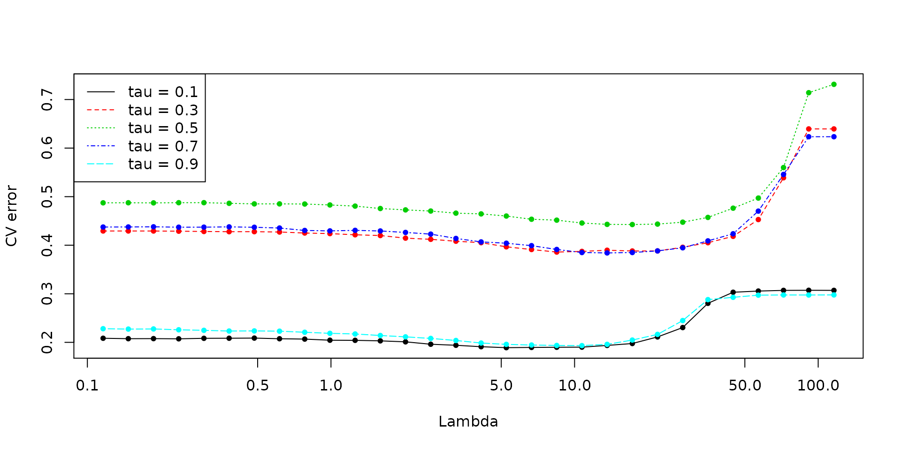
# Refit at new quantile levels
tau_new = c(0.01, 0.025, seq(0.05, 0.95, by=0.05), 0.975, 0.99)
new_obj = refit_quantile_lasso(cv_obj, x, y, tau_new, lp_solver="gurobi", verbose=TRUE)## Warning in quantile_genlasso_lp(x = x, y = y, d = d, tau = tau, lambda =
## lambda, : gurobi R package not installed, using Rglpk instead.## Problems solved (of 23): 5 ... 10 ... 15 ... 20 ...# Predicted and extrapolated quantiles at a few values of x
par(mfrow=c(1,3))
for (i in 1:9) {
x0 = matrix(rnorm(p), nrow=1)
qtrue = qnorm(tau_new, mu(x0))
qpred1 = predict(cv_obj, x0, sort=TRUE)
qextr1 = quantile_extrapolate(tau, qpred1, tau_new, qfun_left=qnorm, qfun_right=qnorm)
qpred2 = predict(new_obj, x0, sort=TRUE)
plot(tau_new, qtrue, type="o", ylim=range(qtrue, qextr1, qpred2, na.rm=TRUE), ylab="Quantile")
lines(tau_new, qextr1, col=2, pch=20, type="o")
points(tau, qpred1, col=4, cex=1.5, lwd=2)
lines(tau_new, qpred2, col=3, pch=20, type="o")
legend("topleft", legend=c("True", "Predicted", "Extrapolated", "Predicted (refit)"),
col=c(1,4,2,3), pch=c(21,21,20,20))
}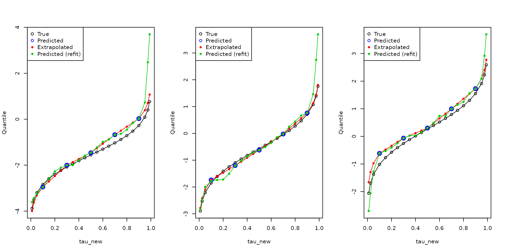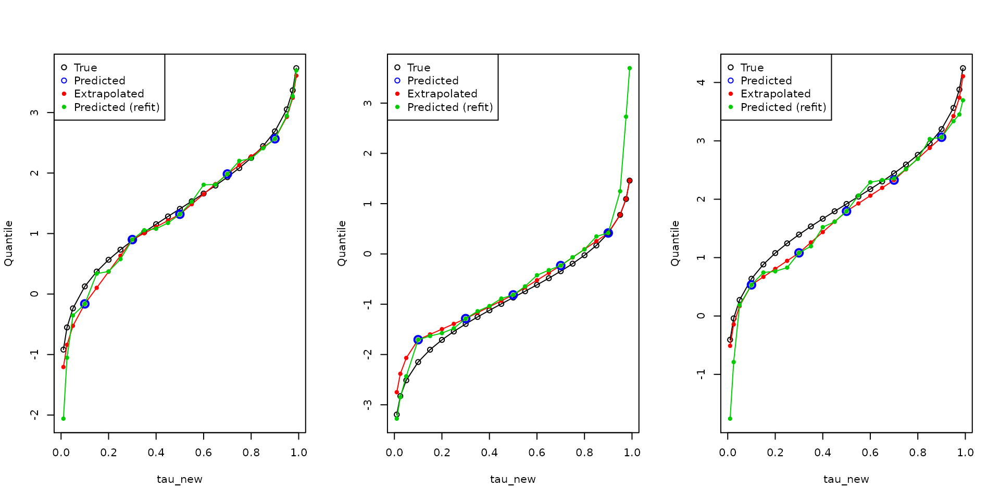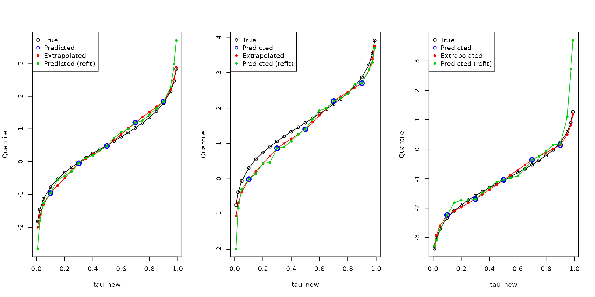
Poisson example
We show another simple example of CV now with Poisson regression data. Through this, we can also demonstrate how to use built-in transform (and inverse transform) functionality. And again we show how to extrapolate to a new set of quantiles, and how to refit at a new set of quantiles.
n = 500
p = 50
x = matrix(rnorm(n*p), n, p)
mu = function(x) x[1] + x[2]
y = rpois(n, exp(apply(x, 1, mu)))
# Run CV, over just a few quantile levels
tau = c(0.1, 0.3, 0.5, 0.7, 0.9)
cv_obj1 = cv_quantile_lasso(x, y, tau=tau, nlambda=30, nfolds=5, lp_solver="gurobi", verbose=TRUE, sort=TRUE)## Warning in get_lambda_max(x, y, d, weights, lp_solver): gurobi R package not
## installed, using Rglpk instead.## CV fold 1 ...## Warning in quantile_genlasso_lp(x = x, y = y, d = d, tau = tau, lambda =
## lambda, : gurobi R package not installed, using Rglpk instead.## Problems solved (of 150): 5 ... 10 ... 15 ... 20 ... 25 ... 30 ... 35 ... 40 ... 45 ... 50 ... 55 ... 60 ... 65 ... 70 ... 75 ... 80 ... 85 ... 90 ... 95 ... 100 ... 105 ... 110 ... 115 ... 120 ... 125 ... 130 ... 135 ... 140 ... 145 ... 150 ...
## CV fold 2 ...## Warning in quantile_genlasso_lp(x = x, y = y, d = d, tau = tau, lambda =
## lambda, : gurobi R package not installed, using Rglpk instead.## Problems solved (of 150): 5 ... 10 ... 15 ... 20 ... 25 ... 30 ... 35 ... 40 ... 45 ... 50 ... 55 ... 60 ... 65 ... 70 ... 75 ... 80 ... 85 ... 90 ... 95 ... 100 ... 105 ... 110 ... 115 ... 120 ... 125 ... 130 ... 135 ... 140 ... 145 ... 150 ...
## CV fold 3 ...## Warning in quantile_genlasso_lp(x = x, y = y, d = d, tau = tau, lambda =
## lambda, : gurobi R package not installed, using Rglpk instead.## Problems solved (of 150): 5 ... 10 ... 15 ... 20 ... 25 ... 30 ... 35 ... 40 ... 45 ... 50 ... 55 ... 60 ... 65 ... 70 ... 75 ... 80 ... 85 ... 90 ... 95 ... 100 ... 105 ... 110 ... 115 ... 120 ... 125 ... 130 ... 135 ... 140 ... 145 ... 150 ...
## CV fold 4 ...## Warning in quantile_genlasso_lp(x = x, y = y, d = d, tau = tau, lambda =
## lambda, : gurobi R package not installed, using Rglpk instead.## Problems solved (of 150): 5 ... 10 ... 15 ... 20 ... 25 ... 30 ... 35 ... 40 ... 45 ... 50 ... 55 ... 60 ... 65 ... 70 ... 75 ... 80 ... 85 ... 90 ... 95 ... 100 ... 105 ... 110 ... 115 ... 120 ... 125 ... 130 ... 135 ... 140 ... 145 ... 150 ...
## CV fold 5 ...## Warning in quantile_genlasso_lp(x = x, y = y, d = d, tau = tau, lambda =
## lambda, : gurobi R package not installed, using Rglpk instead.## Problems solved (of 150): 5 ... 10 ... 15 ... 20 ... 25 ... 30 ... 35 ... 40 ... 45 ... 50 ... 55 ... 60 ... 65 ... 70 ... 75 ... 80 ... 85 ... 90 ... 95 ... 100 ... 105 ... 110 ... 115 ... 120 ... 125 ... 130 ... 135 ... 140 ... 145 ... 150 ...
## Computing CV errors and optimum lambdas ...
## Refitting on full training set with optimum lambdas ...## Warning in quantile_genlasso_lp(x = x, y = y, d = d, tau = tau, lambda =
## lambda, : gurobi R package not installed, using Rglpk instead.## Problems solved (of 5): 1 ... 2 ... 3 ... 4 ... 5 ...cv_obj2 = cv_quantile_lasso(x, y, tau=tau, nlambda=30, nfolds=5, lp_solver="gurobi", verbose=TRUE, sort=TRUE,
transform=log_pad(a=1), inv_trans=inv_log_pad(a=1)) ## Warning in get_lambda_max(x, y, d, weights, lp_solver): gurobi R package not
## installed, using Rglpk instead.## CV fold 1 ...## Warning in quantile_genlasso_lp(x = x, y = y, d = d, tau = tau, lambda =
## lambda, : gurobi R package not installed, using Rglpk instead.## Problems solved (of 150): 5 ... 10 ... 15 ... 20 ... 25 ... 30 ... 35 ... 40 ... 45 ... 50 ... 55 ... 60 ... 65 ... 70 ... 75 ... 80 ... 85 ... 90 ... 95 ... 100 ... 105 ... 110 ... 115 ... 120 ... 125 ... 130 ... 135 ... 140 ... 145 ... 150 ...
## CV fold 2 ...## Warning in quantile_genlasso_lp(x = x, y = y, d = d, tau = tau, lambda =
## lambda, : gurobi R package not installed, using Rglpk instead.## Problems solved (of 150): 5 ... 10 ... 15 ... 20 ... 25 ... 30 ... 35 ... 40 ... 45 ... 50 ... 55 ... 60 ... 65 ... 70 ... 75 ... 80 ... 85 ... 90 ... 95 ... 100 ... 105 ... 110 ... 115 ... 120 ... 125 ... 130 ... 135 ... 140 ... 145 ... 150 ...
## CV fold 3 ...## Warning in quantile_genlasso_lp(x = x, y = y, d = d, tau = tau, lambda =
## lambda, : gurobi R package not installed, using Rglpk instead.## Problems solved (of 150): 5 ... 10 ... 15 ... 20 ... 25 ... 30 ... 35 ... 40 ... 45 ... 50 ... 55 ... 60 ... 65 ... 70 ... 75 ... 80 ... 85 ... 90 ... 95 ... 100 ... 105 ... 110 ... 115 ... 120 ... 125 ... 130 ... 135 ... 140 ... 145 ... 150 ...
## CV fold 4 ...## Warning in quantile_genlasso_lp(x = x, y = y, d = d, tau = tau, lambda =
## lambda, : gurobi R package not installed, using Rglpk instead.## Problems solved (of 150): 5 ... 10 ... 15 ... 20 ... 25 ... 30 ... 35 ... 40 ... 45 ... 50 ... 55 ... 60 ... 65 ... 70 ... 75 ... 80 ... 85 ... 90 ... 95 ... 100 ... 105 ... 110 ... 115 ... 120 ... 125 ... 130 ... 135 ... 140 ... 145 ... 150 ...
## CV fold 5 ...## Warning in quantile_genlasso_lp(x = x, y = y, d = d, tau = tau, lambda =
## lambda, : gurobi R package not installed, using Rglpk instead.## Problems solved (of 150): 5 ... 10 ... 15 ... 20 ... 25 ... 30 ... 35 ... 40 ... 45 ... 50 ... 55 ... 60 ... 65 ... 70 ... 75 ... 80 ... 85 ... 90 ... 95 ... 100 ... 105 ... 110 ... 115 ... 120 ... 125 ... 130 ... 135 ... 140 ... 145 ... 150 ...
## Computing CV errors and optimum lambdas ...
## Refitting on full training set with optimum lambdas ...## Warning in quantile_genlasso_lp(x = x, y = y, d = d, tau = tau, lambda =
## lambda, : gurobi R package not installed, using Rglpk instead.## Problems solved (of 5): 1 ... 2 ... 3 ... 4 ... 5 ...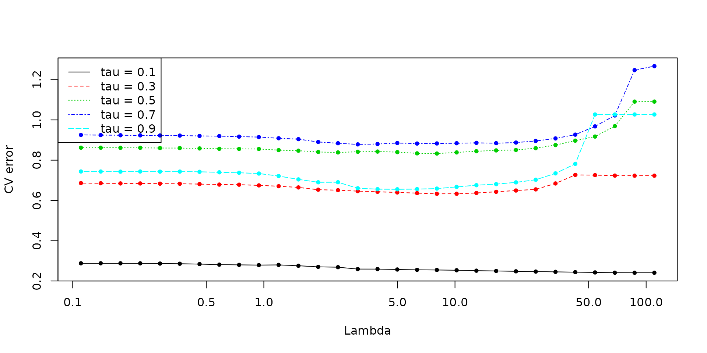
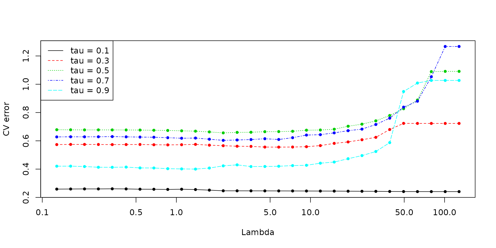
# Refit at new quantile levels
tau_new = c(0.01, 0.025, seq(0.05, 0.95, by=0.05), 0.975, 0.99)
new_obj1 = refit_quantile_lasso(cv_obj1, x, y, tau_new, lp_solver="gurobi", verbose=TRUE)## Warning in quantile_genlasso_lp(x = x, y = y, d = d, tau = tau, lambda =
## lambda, : gurobi R package not installed, using Rglpk instead.## Problems solved (of 23): 5 ... 10 ... 15 ... 20 ...## Warning in quantile_genlasso_lp(x = x, y = y, d = d, tau = tau, lambda =
## lambda, : gurobi R package not installed, using Rglpk instead.## Problems solved (of 23): 5 ... 10 ... 15 ... 20 ...# Predicted and extrapolated quantiles at a few values of x
par(mfrow=c(1,3))
for (i in 1:9) {
x0 = matrix(rnorm(p), nrow=1)
qtrue = qpois(tau_new, exp(mu(x0)))
qpred1 = predict(cv_obj1, x0, sort=TRUE, nonneg=TRUE, round=TRUE)
qextr1 = quantile_extrapolate(tau, qpred1, tau_new, qfun_left=qpois, qfun_right=qpois, nonneg=TRUE, round=TRUE)
qpred2 = predict(cv_obj2, x0, sort=TRUE, nonneg=TRUE, round=TRUE)
qextr2 = quantile_extrapolate(tau, qpred2, tau_new, qfun_left=qpois, qfun_right=qpois, nonneg=TRUE, round=TRUE)
plot(tau_new, qtrue, type="o", ylim=range(qtrue, qextr1, qextr2, na.rm=TRUE), ylab="Quantile")
lines(tau_new, qextr1, col=2, pch=20, type="o")
points(tau, qpred1, col=4, cex=1.5, lwd=2)
lines(tau_new, qextr2, col=3, pch=20, type="o")
points(tau, qpred2, col=5, cex=1.5, lwd=2)
legend("topleft", legend=c("True", "Predicted", "Extrapolated", "Predicted (log)", "Extrapolated (log)"),
col=c(1,4,2,5,3), pch=c(21,21,20,21,20))
}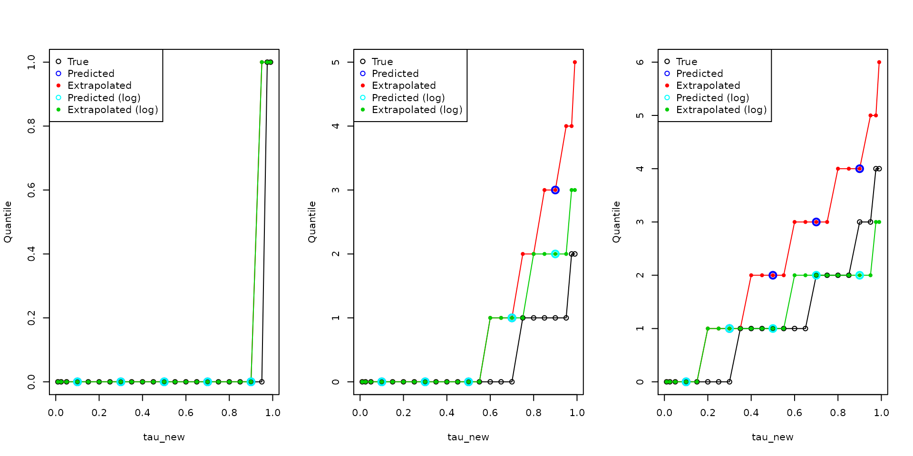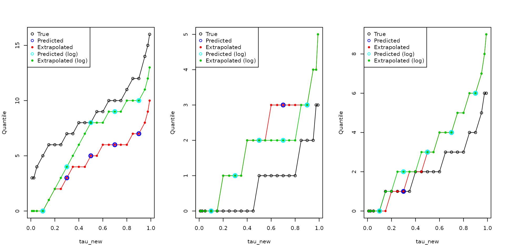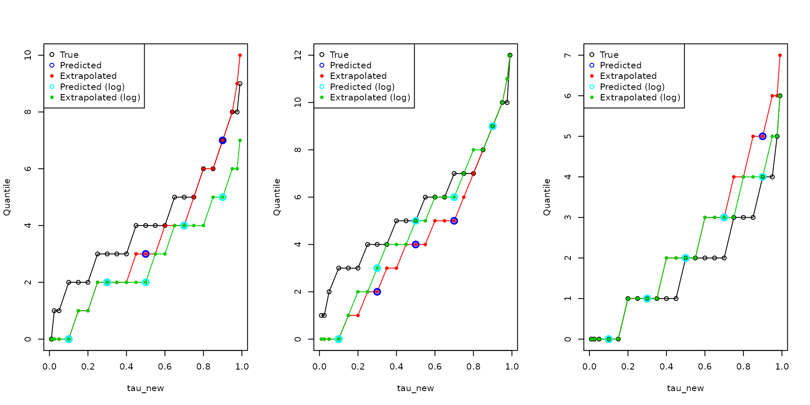
# Refitted versions
par(mfrow=c(1,3))
for (i in 1:9) {
x0 = matrix(rnorm(p), nrow=1)
qtrue = qpois(tau_new, exp(mu(x0)))
qpred3 = predict(new_obj1, x0, sort=TRUE, nonneg=TRUE, round=TRUE)
qpred4 = predict(new_obj2, x0, sort=TRUE, nonneg=TRUE, round=TRUE)
plot(tau_new, qtrue, type="o", ylim=range(qtrue, qpred3, qpred4, na.rm=TRUE), ylab="Quantile")
lines(tau_new, qpred3, col=3, pch=20, type="o")
lines(tau_new, qpred4, col=6, pch=20, type="o")
legend("topleft", legend=c("True", "Predicted (refit)", "Predicted (log, refit)"), col=c(1,3,6), pch=c(21,20,20))
} 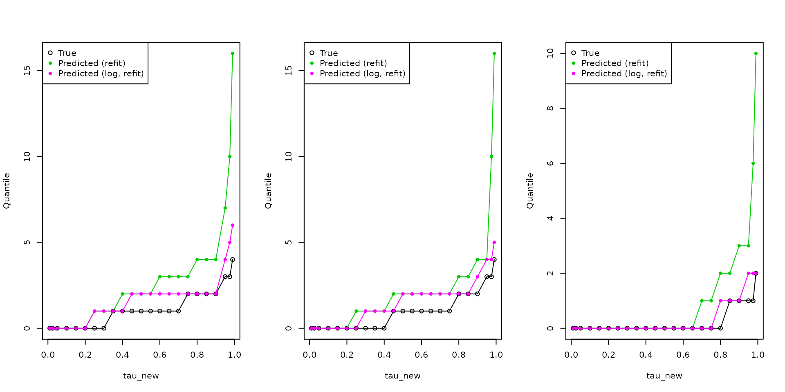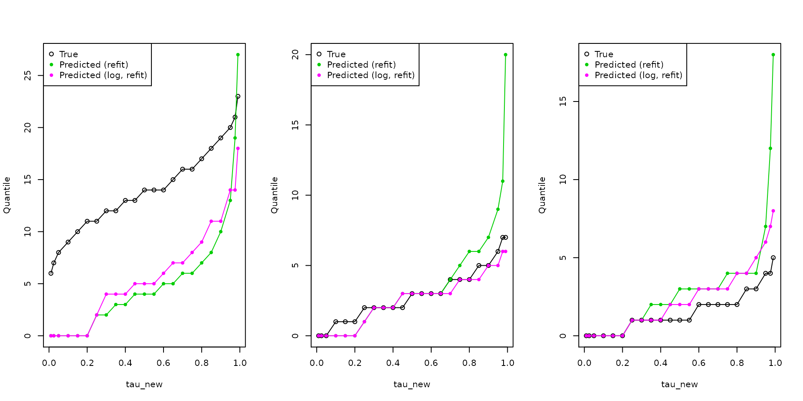
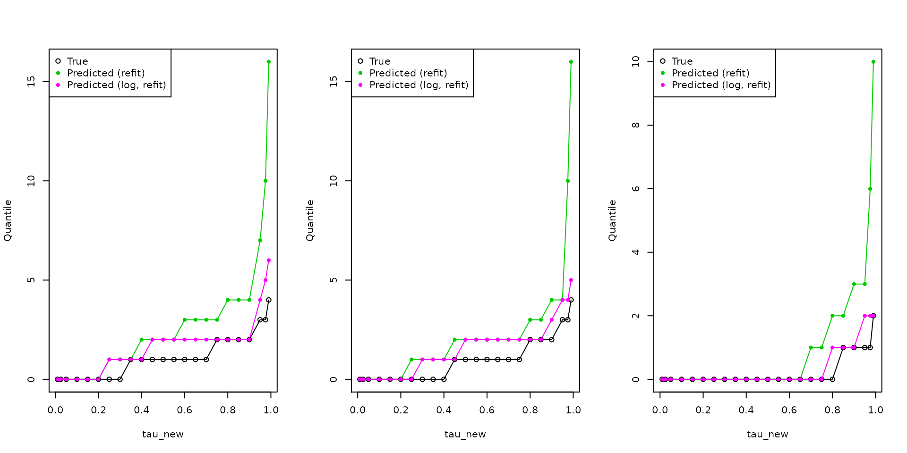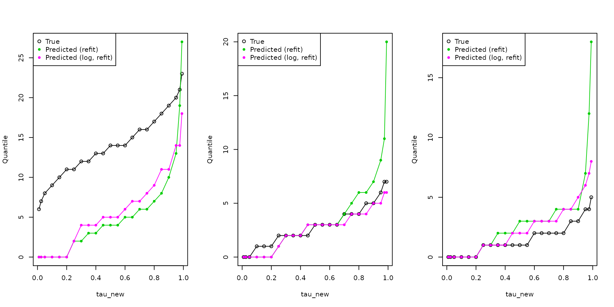
Noncrossing constraints
We refit the last CV object at new quantile levels, and additionally enforce noncrossing constraints. (Note that these noncrossing constraints can only be applied when the values in the tau vector being passed to quantile_genlasso() are distinct, and sorted in increasing order.)
n0 = 9
x0 = matrix(rnorm(n0*p), n0, p)
new_obj3 = refit_quantile_lasso(cv_obj2, x, y, tau_new, noncross=TRUE, x0=rbind(x,x0), lp_solver="gurobi", verbose=TRUE)## Warning in quantile_genlasso_lp(x = x, y = y, d = d, tau = tau, lambda =
## lambda, : gurobi R package not installed, using Rglpk instead.## GLPK Simplex Optimizer, v4.65
## 36498 rows, 13823 columns, 2342796 non-zeros
## 0: obj = 0.000000000e+00 inf = 4.645e+03 (7061)
## Perturbing LP to avoid stalling [199]...
## 1035: obj = 0.000000000e+00 inf = 4.645e+03 (7061) 10
## 1644: obj = 0.000000000e+00 inf = 4.645e+03 (7061) 6
## 2226: obj = 0.000000000e+00 inf = 4.645e+03 (7061) 5
## 2750: obj = 0.000000000e+00 inf = 4.645e+03 (7061) 6
## 3300: obj = 0.000000000e+00 inf = 4.645e+03 (7061) 5
## 3801: obj = 0.000000000e+00 inf = 4.645e+03 (7061) 5
## 4324: obj = 0.000000000e+00 inf = 4.645e+03 (7061) 5
## 4784: obj = 0.000000000e+00 inf = 4.645e+03 (7061) 5
## 5304: obj = 0.000000000e+00 inf = 4.645e+03 (7061) 5
## 5810: obj = 0.000000000e+00 inf = 4.645e+03 (7061) 5
## 6308: obj = 3.480454564e+01 inf = 3.912e+03 (7029) 5
## 6790: obj = 3.524030128e+01 inf = 3.903e+03 (7029) 5
## 7252: obj = 3.623751379e+01 inf = 3.882e+03 (7006) 4
## 7710: obj = 3.624663064e+01 inf = 3.882e+03 (7006) 5
## 8177: obj = 3.626055304e+01 inf = 3.882e+03 (7006) 4
## 8632: obj = 3.637021509e+01 inf = 3.880e+03 (7006) 5
## 8960: obj = 3.639483746e+01 inf = 3.880e+03 (7006) 3
## 9233: obj = 3.642860340e+01 inf = 3.880e+03 (7006) 3
## 9516: obj = 3.648875666e+01 inf = 3.880e+03 (7006) 2
## 9798: obj = 3.659973699e+01 inf = 3.879e+03 (7006) 3
## 10199: obj = 3.697572318e+01 inf = 3.878e+03 (7006) 4
## 10558: obj = 4.357523257e+01 inf = 3.850e+03 (7004) 4
## 10958: obj = 1.175633656e+02 inf = 3.571e+03 (6956) 4
## 11356: obj = 1.530850553e+02 inf = 3.441e+03 (6899) 4
## 11750: obj = 2.389665575e+02 inf = 3.137e+03 (6737) 4
## 12152: obj = 3.130672747e+02 inf = 2.905e+03 (6599) 4
## 12549: obj = 3.659882617e+02 inf = 2.791e+03 (6484) 4
## 12919: obj = 4.837646121e+02 inf = 2.585e+03 (6321) 3
## 13335: obj = 5.877911680e+02 inf = 2.414e+03 (6172) 4
## 13747: obj = 7.146081580e+02 inf = 2.211e+03 (5999) 4
## 14094: obj = 7.908704726e+02 inf = 2.093e+03 (5867) 4
## 14496: obj = 8.725252055e+02 inf = 1.985e+03 (5734) 4
## 14831: obj = 9.831747413e+02 inf = 1.856e+03 (5580) 3
## 15181: obj = 1.078466361e+03 inf = 1.774e+03 (5470) 4
## 15562: obj = 1.184073274e+03 inf = 1.690e+03 (5374) 3
## 15920: obj = 1.268448790e+03 inf = 1.609e+03 (5298) 4
## 16259: obj = 1.388299369e+03 inf = 1.530e+03 (5225) 3
## 16609: obj = 1.507741357e+03 inf = 1.459e+03 (5144) 4
## 16987: obj = 1.614061975e+03 inf = 1.405e+03 (5073) 3
## 17344: obj = 1.658218968e+03 inf = 1.381e+03 (5046) 4
## 17690: obj = 1.707899196e+03 inf = 1.338e+03 (4996) 3
## 18018: obj = 1.820463899e+03 inf = 1.252e+03 (4908) 4
## 18394: obj = 1.930224651e+03 inf = 1.201e+03 (4854) 3
## 18749: obj = 2.078541549e+03 inf = 1.131e+03 (4792) 4
## 19099: obj = 2.172583187e+03 inf = 1.057e+03 (4738) 3
## 19425: obj = 2.230057565e+03 inf = 1.008e+03 (4665) 4
## 19746: obj = 2.273829766e+03 inf = 9.629e+02 (4619) 3
## 20083: obj = 2.315097079e+03 inf = 9.213e+02 (4564) 3
## 20451: obj = 2.401238227e+03 inf = 8.755e+02 (4482) 4
## 20788: obj = 2.464920232e+03 inf = 8.398e+02 (4421) 3
## 21115: obj = 2.506289344e+03 inf = 8.075e+02 (4364) 3
## 21444: obj = 2.535186690e+03 inf = 7.796e+02 (4323) 3
## 21747: obj = 2.583610789e+03 inf = 7.403e+02 (4269) 3
## 21959: obj = 2.603740044e+03 inf = 7.158e+02 (4224) 3
## 22194: obj = 2.627389309e+03 inf = 6.912e+02 (4185) 2
## 22459: obj = 2.661106858e+03 inf = 6.696e+02 (4133) 3
## 22762: obj = 2.700194907e+03 inf = 6.473e+02 (4077) 3
## 22981: obj = 2.718043768e+03 inf = 6.308e+02 (4050) 2
## 23360: obj = 2.749222243e+03 inf = 6.087e+02 (3997) 3
## 23634: obj = 2.784000914e+03 inf = 5.835e+02 (3948) 3
## 23916: obj = 2.835453704e+03 inf = 5.593e+02 (3898) 3
## 24202: obj = 2.872018982e+03 inf = 5.406e+02 (3868) 3
## 24516: obj = 2.901999438e+03 inf = 5.245e+02 (3829) 3
## 24816: obj = 2.958442073e+03 inf = 5.046e+02 (3766) 3
## 25158: obj = 2.992510642e+03 inf = 4.869e+02 (3710) 3
## 25453: obj = 3.022401214e+03 inf = 4.672e+02 (3647) 3
## 25771: obj = 3.038055661e+03 inf = 4.503e+02 (3607) 3
## 26133: obj = 3.066420105e+03 inf = 4.242e+02 (3547) 4
## 26500: obj = 3.110923917e+03 inf = 4.046e+02 (3494) 3
## 26813: obj = 3.163916365e+03 inf = 3.891e+02 (3438) 4
## 27210: obj = 3.237205256e+03 inf = 3.657e+02 (3362) 3
## 27575: obj = 3.297766951e+03 inf = 3.469e+02 (3300) 4
## 27930: obj = 3.329480618e+03 inf = 3.364e+02 (3252) 4
## 28319: obj = 3.361732211e+03 inf = 3.219e+02 (3201) 3
## 28638: obj = 3.381229496e+03 inf = 3.124e+02 (3149) 4
## 28951: obj = 3.418402631e+03 inf = 2.976e+02 (3108) 3
## 29256: obj = 3.456630942e+03 inf = 2.876e+02 (3077) 3
## 29486: obj = 3.488088214e+03 inf = 2.809e+02 (3051) 2
## 29740: obj = 3.501639814e+03 inf = 2.753e+02 (3016) 2
## 30027: obj = 3.519309024e+03 inf = 2.634e+02 (2967) 3
## 30276: obj = 3.521132731e+03 inf = 2.571e+02 (2945) 3
## 30556: obj = 3.532947212e+03 inf = 2.452e+02 (2907) 2
## 30807: obj = 3.540904304e+03 inf = 2.361e+02 (2858) 3
## 31134: obj = 3.566226670e+03 inf = 2.233e+02 (2791) 3
## 31473: obj = 3.595718500e+03 inf = 2.129e+02 (2729) 3
## 31777: obj = 3.644376296e+03 inf = 2.018e+02 (2653) 4
## 32143: obj = 3.662854416e+03 inf = 1.926e+02 (2590) 3
## 32486: obj = 3.690225084e+03 inf = 1.839e+02 (2540) 4
## 32810: obj = 3.726454699e+03 inf = 1.756e+02 (2476) 3
## 33172: obj = 3.749385612e+03 inf = 1.680e+02 (2419) 3
## 33497: obj = 3.775416092e+03 inf = 1.594e+02 (2361) 4
## 33859: obj = 3.813092649e+03 inf = 1.490e+02 (2287) 3
## 34206: obj = 3.847518167e+03 inf = 1.414e+02 (2238) 4
## 34509: obj = 3.849587611e+03 inf = 1.350e+02 (2193) 3
## 34813: obj = 3.869305792e+03 inf = 1.299e+02 (2161) 3
## 35157: obj = 3.911902427e+03 inf = 1.232e+02 (2122) 3
## 35505: obj = 3.942789737e+03 inf = 1.175e+02 (2083) 3
## 35785: obj = 3.974286907e+03 inf = 1.126e+02 (2054) 3
## 36025: obj = 4.010467882e+03 inf = 1.066e+02 (2012) 3
## 36385: obj = 4.036909168e+03 inf = 1.017e+02 (1965) 3
## 36746: obj = 4.073563211e+03 inf = 9.451e+01 (1932) 4
## 37123: obj = 4.107888058e+03 inf = 8.978e+01 (1891) 3
## 37472: obj = 4.154001577e+03 inf = 8.513e+01 (1859) 4
## 37760: obj = 4.211009670e+03 inf = 7.953e+01 (1824) 3
## 38031: obj = 4.239433170e+03 inf = 7.521e+01 (1771) 2
## 38259: obj = 4.277346195e+03 inf = 7.236e+01 (1733) 3
## 38457: obj = 4.296774240e+03 inf = 7.025e+01 (1713) 2
## 38648: obj = 4.310578618e+03 inf = 6.805e+01 (1684) 1
## 38815: obj = 4.341145548e+03 inf = 6.489e+01 (1664) 2
## 39011: obj = 4.378411626e+03 inf = 6.154e+01 (1628) 2
## 39356: obj = 4.453958201e+03 inf = 5.808e+01 (1568) 3
## 39588: obj = 4.520389322e+03 inf = 5.479e+01 (1537) 3
## 39856: obj = 4.560789211e+03 inf = 5.208e+01 (1505) 2
## 40139: obj = 4.619711637e+03 inf = 4.919e+01 (1457) 3
## 40400: obj = 4.649804967e+03 inf = 4.637e+01 (1436) 3
## 40632: obj = 4.693326002e+03 inf = 4.361e+01 (1398) 2
## 40855: obj = 4.771228136e+03 inf = 4.080e+01 (1359) 2
## 41067: obj = 4.835101946e+03 inf = 3.828e+01 (1329) 2
## 41380: obj = 4.896708065e+03 inf = 3.618e+01 (1299) 3
## 41726: obj = 5.003399570e+03 inf = 3.326e+01 (1264) 4
## 42009: obj = 5.079694038e+03 inf = 3.100e+01 (1233) 3
## 42384: obj = 5.134439013e+03 inf = 2.820e+01 (1190) 3
## 42742: obj = 5.240942957e+03 inf = 2.511e+01 (1137) 4
## 43113: obj = 5.315615047e+03 inf = 2.288e+01 (1102) 3
## 43434: obj = 5.456943767e+03 inf = 2.013e+01 (1048) 4
## 43787: obj = 5.520291715e+03 inf = 1.857e+01 (1000) 3
## 44033: obj = 5.509568839e+03 inf = 1.663e+01 (959) 3
## 44330: obj = 5.505301418e+03 inf = 1.556e+01 (936) 3
## 44568: obj = 5.493457279e+03 inf = 1.451e+01 (911) 2
## 44811: obj = 5.498897424e+03 inf = 1.373e+01 (883) 2
## 45228: obj = 5.518100142e+03 inf = 1.166e+01 (669) 2
## 45548: obj = 5.523231767e+03 inf = 1.078e+01 (643) 4
## 45778: obj = 5.528023996e+03 inf = 9.692e+00 (611) 2
## 46086: obj = 5.575908606e+03 inf = 8.051e+00 (493) 2
## 46564: obj = 5.609036773e+03 inf = 4.031e+00 (213) 2
## 46777: obj = 5.613067461e+03 inf = 3.224e-05 (0)
## * 47103: obj = 5.474595618e+03 inf = 3.422e-05 (650) 3
## * 47413: obj = 5.374419292e+03 inf = 3.589e-05 (649) 4
## * 47818: obj = 5.199354495e+03 inf = 3.303e-05 (646) 4
## * 48205: obj = 5.035216569e+03 inf = 2.666e-05 (647) 3
## * 48568: obj = 4.951917455e+03 inf = 2.454e-05 (635) 4
## * 48889: obj = 4.852332298e+03 inf = 2.475e-05 (630) 3
## * 49244: obj = 4.668513154e+03 inf = 2.630e-05 (650) 3
## * 49636: obj = 4.487184707e+03 inf = 2.437e-05 (657) 4
## * 49926: obj = 4.402145354e+03 inf = 1.926e-05 (645) 3
## * 50275: obj = 4.285475316e+03 inf = 2.401e-05 (637) 4
## * 50609: obj = 4.153327919e+03 inf = 2.435e-05 (644) 3
## * 50925: obj = 4.007323256e+03 inf = 1.969e-05 (646) 3
## * 51270: obj = 3.934063378e+03 inf = 2.039e-05 (648) 4
## * 51632: obj = 3.837885374e+03 inf = 2.623e-05 (661) 3
## * 51950: obj = 3.795293346e+03 inf = 2.076e-05 (657) 3
## * 52338: obj = 3.721012442e+03 inf = 2.116e-05 (638) 4
## * 52697: obj = 3.642478307e+03 inf = 2.025e-05 (652) 4
## * 53100: obj = 3.561721243e+03 inf = 2.264e-05 (637) 3
## * 53469: obj = 3.499540341e+03 inf = 2.046e-05 (672) 4
## * 53829: obj = 3.426323880e+03 inf = 2.077e-05 (654) 4
## * 54150: obj = 3.367768847e+03 inf = 2.310e-05 (660) 3
## * 54468: obj = 3.318396882e+03 inf = 2.404e-05 (665) 3
## * 54786: obj = 3.272845313e+03 inf = 2.206e-05 (657) 3
## * 55089: obj = 3.225226909e+03 inf = 2.091e-05 (638) 3
## * 55430: obj = 3.178887804e+03 inf = 1.255e-05 (661) 4
## * 55826: obj = 3.095174440e+03 inf = 1.239e-05 (668) 3
## * 56229: obj = 3.030856185e+03 inf = 1.284e-05 (673) 4
## * 56574: obj = 2.979095822e+03 inf = 1.170e-05 (664) 4
## * 56905: obj = 2.896337897e+03 inf = 1.258e-05 (678) 3
## * 57285: obj = 2.838592427e+03 inf = 1.372e-05 (677) 4
## * 57661: obj = 2.772141652e+03 inf = 1.105e-05 (685) 4
## * 58016: obj = 2.709684866e+03 inf = 1.149e-05 (682) 3
## * 58369: obj = 2.663198606e+03 inf = 1.140e-05 (699) 4
## * 58728: obj = 2.611251196e+03 inf = 1.212e-05 (701) 3
## * 59137: obj = 2.553705597e+03 inf = 1.410e-05 (699) 4
## * 59472: obj = 2.516424404e+03 inf = 1.234e-05 (698) 3
## * 59857: obj = 2.449909348e+03 inf = 1.346e-05 (688) 4
## * 60265: obj = 2.407505249e+03 inf = 1.394e-05 (688) 4
## * 60614: obj = 2.367276859e+03 inf = 1.409e-05 (696) 4
## * 60983: obj = 2.324247476e+03 inf = 1.473e-05 (716) 3
## * 61232: obj = 2.298135211e+03 inf = 1.443e-05 (706) 3
## * 61510: obj = 2.268293180e+03 inf = 1.295e-05 (695) 3
## * 61785: obj = 2.235093680e+03 inf = 1.260e-05 (711) 2
## * 62098: obj = 2.200164160e+03 inf = 1.521e-05 (686) 3
## * 62452: obj = 2.175208993e+03 inf = 2.163e-05 (705) 4
## * 62746: obj = 2.132248624e+03 inf = 1.955e-05 (711) 3
## * 63116: obj = 2.087889443e+03 inf = 2.198e-05 (689) 3
## * 63520: obj = 2.048594181e+03 inf = 1.847e-05 (698) 4
## * 63884: obj = 1.984433790e+03 inf = 1.961e-05 (681) 4
## * 64285: obj = 1.946234881e+03 inf = 1.893e-05 (705) 4
## * 64560: obj = 1.923070826e+03 inf = 1.994e-05 (680) 3
## * 64853: obj = 1.891215760e+03 inf = 2.209e-05 (668) 3
## * 65156: obj = 1.870568866e+03 inf = 2.068e-05 (683) 3
## * 65522: obj = 1.852273699e+03 inf = 2.338e-05 (700) 3
## * 65930: obj = 1.827485405e+03 inf = 2.569e-05 (674) 4
## * 66398: obj = 1.797150344e+03 inf = 2.420e-05 (690) 5
## * 66843: obj = 1.765792577e+03 inf = 2.640e-05 (677) 4
## * 67274: obj = 1.754080052e+03 inf = 3.506e-05 (693) 4
## * 67651: obj = 1.745887209e+03 inf = 3.227e-05 (682) 4
## * 68109: obj = 1.742468837e+03 inf = 2.731e-05 (681) 5
## * 68591: obj = 1.730520617e+03 inf = 2.517e-05 (696) 4
## * 68968: obj = 1.719387270e+03 inf = 2.332e-05 (695) 4
## * 69373: obj = 1.711464939e+03 inf = 2.480e-05 (712) 4
## * 69883: obj = 1.691541481e+03 inf = 2.967e-05 (673) 5
## * 70405: obj = 1.682709134e+03 inf = 3.314e-05 (695) 5
## * 70905: obj = 1.663239443e+03 inf = 3.218e-05 (699) 5
## * 71436: obj = 1.637297640e+03 inf = 2.256e-05 (680) 6
## * 71926: obj = 1.625336867e+03 inf = 4.422e-05 (675) 4
## * 72321: obj = 1.618024838e+03 inf = 4.588e-05 (678) 4
## * 72655: obj = 1.608256657e+03 inf = 4.681e-05 (667) 4
## * 73079: obj = 1.598134319e+03 inf = 4.449e-05 (689) 4
## * 73588: obj = 1.584924775e+03 inf = 4.206e-05 (719) 5
## * 74071: obj = 1.572172031e+03 inf = 4.376e-05 (628) 5
## * 74591: obj = 1.553148324e+03 inf = 4.171e-05 (760) 5
## * 74996: obj = 1.539793756e+03 inf = 4.063e-05 (715) 4
## * 75432: obj = 1.530350235e+03 inf = 3.383e-05 (647) 4
## * 75901: obj = 1.519699557e+03 inf = 3.149e-05 (752) 5
## * 76369: obj = 1.510168445e+03 inf = 2.821e-05 (620) 4
## * 76812: obj = 1.503382170e+03 inf = 2.615e-05 (688) 5
## * 77238: obj = 1.498370253e+03 inf = 2.607e-05 (655) 4
## * 77573: obj = 1.495312970e+03 inf = 2.582e-05 (648) 3
## * 77877: obj = 1.492064572e+03 inf = 2.583e-05 (603) 3
## * 78185: obj = 1.489614033e+03 inf = 2.581e-05 (657) 3
## * 78550: obj = 1.487061709e+03 inf = 2.585e-05 (697) 4
## * 78809: obj = 1.485596056e+03 inf = 2.511e-05 (667) 2
## * 79207: obj = 1.483844978e+03 inf = 2.606e-05 (622) 4
## * 79626: obj = 1.482280616e+03 inf = 2.604e-05 (578) 4
## * 80023: obj = 1.481103503e+03 inf = 2.598e-05 (532) 4
## * 80465: obj = 1.479985113e+03 inf = 2.601e-05 (648) 5
## * 80830: obj = 1.479116547e+03 inf = 2.614e-05 (620) 3
## * 81243: obj = 1.478448189e+03 inf = 2.604e-05 (610) 4
## * 81615: obj = 1.477932235e+03 inf = 2.603e-05 (587) 4
## * 82035: obj = 1.477492126e+03 inf = 2.604e-05 (609) 4
## * 82420: obj = 1.477189758e+03 inf = 2.566e-05 (591) 4
## * 82831: obj = 1.476850530e+03 inf = 2.566e-05 (587) 4
## * 83228: obj = 1.476611710e+03 inf = 2.620e-05 (508) 4
## * 83669: obj = 1.476463481e+03 inf = 2.590e-05 (566) 4
## * 84083: obj = 1.476346876e+03 inf = 2.595e-05 (552) 4
## * 84476: obj = 1.476313147e+03 inf = 2.592e-05 (54) 4
## Removing LP perturbation [84505]...
## * 84505: obj = 1.476317591e+03 inf = 6.080e-13 (0)
## OPTIMAL LP SOLUTION FOUNDqpred1 = predict(new_obj2, x0, sort=FALSE, nonneg=TRUE, round=TRUE)
qpred2 = predict(new_obj2, x0, sort=TRUE, nonneg=TRUE, round=TRUE)
qpred3 = predict(new_obj3, x0, sort=FALSE, nonneg=TRUE, round=TRUE) # Should be sorted already
par(mfrow=c(1,3))
for (i in 1:9) {
qtrue = qpois(tau_new, exp(mu(x0[i,])))
plot(tau_new, qtrue, type="o", ylim=range(qtrue, qpred1[i,], qpred2[i,], qpred3[i,], na.rm=TRUE), ylab="Quantile")
lines(tau_new, qpred1[i,], col=2, pch=20, type="o")
lines(tau_new, qpred2[i,], col=3, pch=20, type="o")
lines(tau_new, qpred3[i,], col=4, pch=20, type="o")
legend("topleft", legend=c("True", "Predicted", "Predicted (sort)", "Predicted (noncross)"), col=1:4, pch=c(21,20,20,20))
}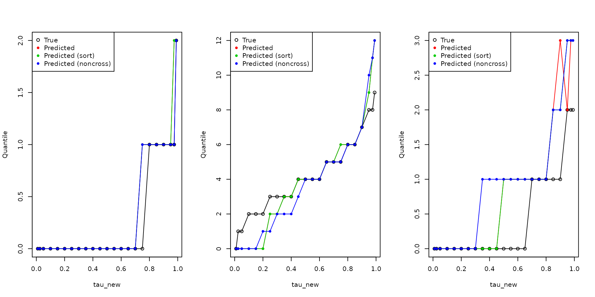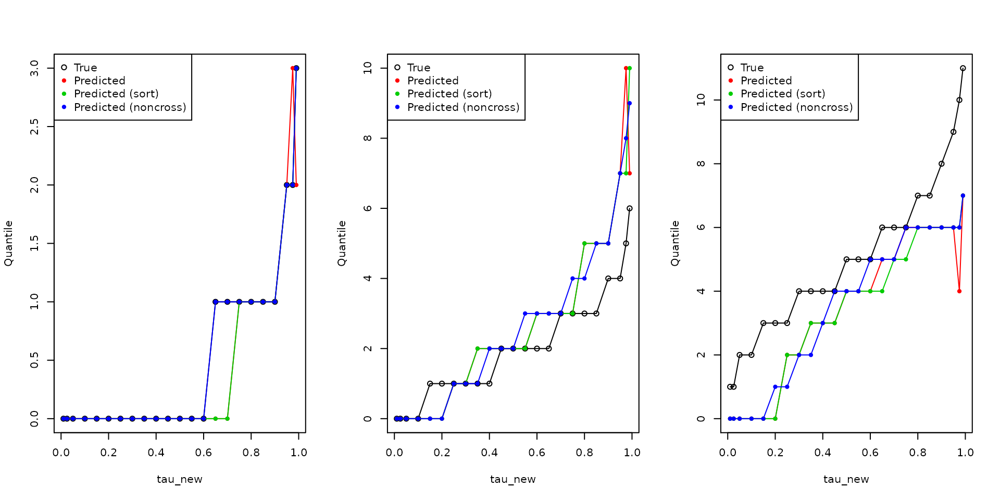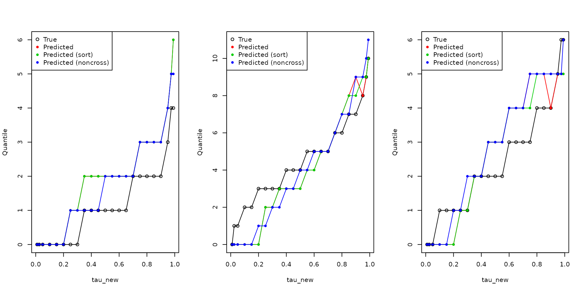